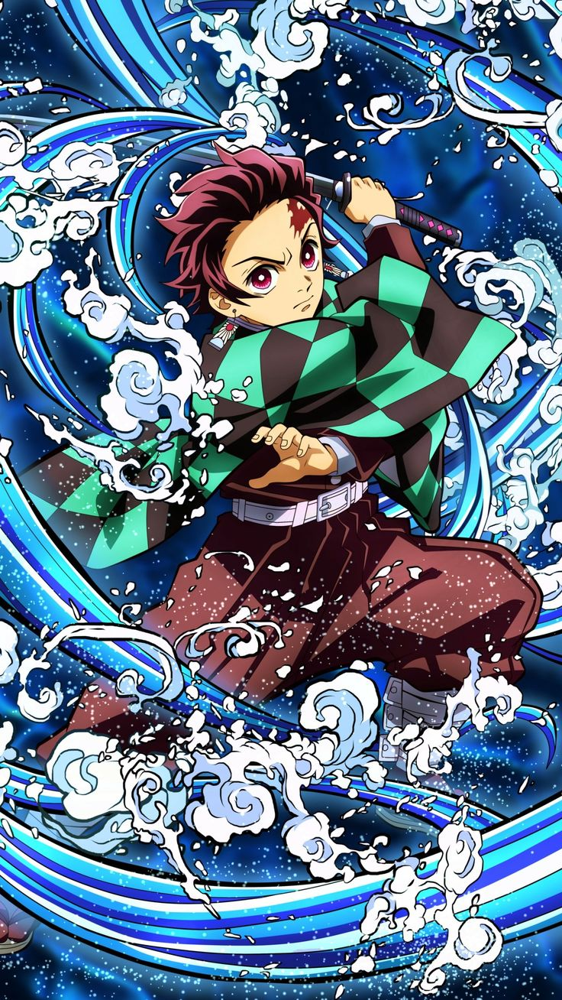
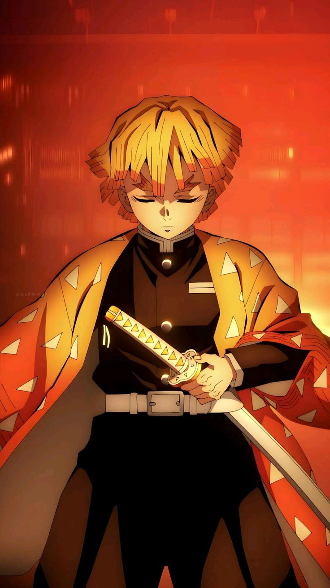
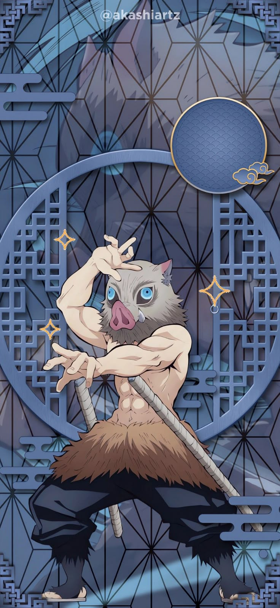

Demon Slayer Corps & Upper Ranks
Explore the prominent warriors and demons clashing within the dimensional folding spaces of the Infinity Castle.

Tanjiro Kamado
Demon Slayer CorpsA kind-hearted boy searching for a cure to turn his sister back into a human. He wields the devastating Sun Breathing techniques passed through his family line.

Nezuko Kamado
Demonized CivilianThough turned into a demon by Muzan, her strong willpower enables her to hold back her feral urges and fight alongside humans using her Exploding Blood Art.

Zenitsu Agatsuma
Demon Slayer CorpsA cowardly swordsman who undergoes a complete transformation when unconscious, unleashing lightning-fast strikes from Thunder Breathing: First Form.

Inosuke Hashibira
Demon Slayer CorpsA hot-blooded, wild warrior raised by wild boars. He charges into combat wearing a boar mask, relying on his self-taught Beast Breathing styles.

Akaza
Twelve KizukiA martial arts master turned demon who values raw strength above all else. He deploys Destructive Death techniques to crush powerful opponents.